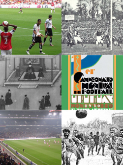
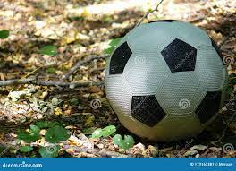
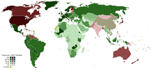
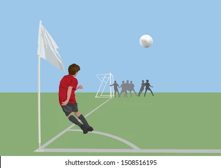

El mundo del futbol
Fútbol y más fútbol
El fútbol y la grandeza, uno solo
- ¿Qué es el fútbol?
Es un deporte de equipo jugado entre dos conjuntos de once jugadores cada uno, mientras los árbitros se ocupan de que las normas se cumplan correctamente
- Historia del futbol
La historia del fútbol se considera a partir de 1869, año de fundación de la Asociación Inglesa de Fútbol, aunque en sus orígenes, al igual que los demás códigos de fútbol, se remontan varios siglos en el pasado, particularmente en las islas británicas durante la Edad Media. Si bien existían puntos en común entre diferentes juegos de pelota que se desarrollaron desde los años del siglo III a. C.

- Naturaleza del juego
El fútbol se juega siguiendo una serie de reglas, llamadas oficialmente reglas de juego. Este deporte se practica con una pelota esférica (de cuero u otro material con una circunferencia no mayor a 70 cm y no inferior a 68 cm, y un peso no superior a 450 g y no inferior a 410 g al comienzo del partido), donde dos equipos de once jugadores cada uno (diez jugadores "de campo" y un guardameta) compiten por encajar la misma en la portería rival, marcando así un gol. El equipo que más goles haya marcado al final del partido es el ganador; si ambos equipos no marcan, o marcan la misma cantidad de tantos, entonces se declara un empate. Puede haber excepciones a esta regla; véase Duración y resultado más abajo.

- Popularidad
Según una encuesta realizada por la FIFA en el año 2006,aproximadamente 270 millones de personas en el mundo están activamente involucradas en el fútbol, incluyendo a balompedistas, árbitros y directivos. De estas, 265 millones juegan al fútbol regularmente de manera profesional, semiprofesional o amateur, considerando tanto a hombres, mujeres, jóvenes y niños. Dicha cifra representa alrededor del 4 % de la población mundial. La confederación con mayor porcentaje de personas activamente involucradas con el fútbol es la Concacaf, con el 8,53 % de la población. Su contraparte se da en la zona de la AFC, donde el porcentaje es de solo un 2,22 %. La UEFA tiene un porcentaje de participación del 7,59 %; la CONMEBOL de 7,47 %; la OFC de 4,68 %; y la Confederación Africana de Fútbol del 5,16 %. Existen más de 1,7 millones de equipos en el mundo y aproximadamente 301 000 clubes

Reglas del futbol
- Saque lateral
Una vez que el balón haya traspasado una línea lateral, se deberá proceder a tomar el balón con la mano para volver a ponerlo en juego.
- Saque de meta
Una vez que el balón haya traspasado la línea frontal, habiendo sido tocada por última vez por un equipo en campo de juego rival, el arquero rival deberá poner el esférico en juego desde su arco.

- Tiro de esquina
Una vez que el balón haya traspasado la línea frontal y haya sido tocado por última vez por un equipo en campo propio, se le concederá al rival reanudar el juego con un saque del balón desde el vértice correspondiente.

Clic para llevar más a fondo el tema
Clic para manejar los tiempos y jugar un rato
Ir a Sección 2
Ir a Sección 3
Sección 2
Pero que lindo es el fútbol pibe

Sección 3
0 Comparación